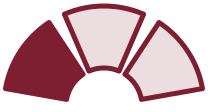
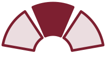
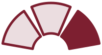
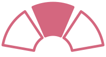

Abanico de tres tercios iguales. La geometría es parte de la marca: no se redibuja a ojo.




46,67° por tercio · separaciones de 10° · apertura 160° · radios 100/38
Mínimo 28 px · resguardo = ½ del alto · sin deformar, rotar, sombrear ni degradar